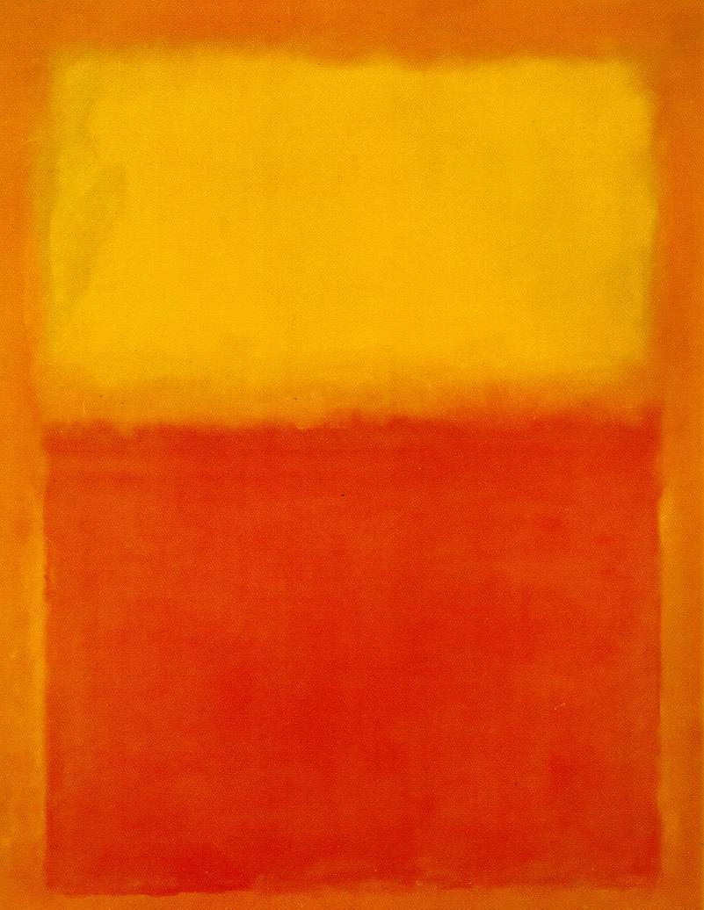

A Talk on a Cereal Box
Nobody Writes Blogs Anymore
. . . Or maybe nobody reads them anymore
This is not a blog. This is a discussion of the relationship between modern art and web design.
The first rule of good design is “make it easy.” The second is “make it pretty.” The third rule is “don't be boring.“
Art from the 20th Century has much to teach webdesign. In particular, Frank Lloyd Wright, William Morris, Gustav Stickley, the American Craftsman movement, Vassily Kandinsky, Paul Klee, the Bauhaus, Piet Mondrian, Marcus Rothko and Barnett Newman have a lot to teach about webdesign, though not a single one of them lived to see Tim Berners-Lee enroll at University.
These artists explored the possibilities of geometric spaces and forms. As much as the ancient Greeks and Romans, they sought to perfect proportions and arrangement in their art.
In seeking the perfect proportions and arrangments of rectangles and lines, these artists wrestled with design questions that are indeed similar to those presented in HTML/CSS.
Mark Rothko's work is perhaps the easiest entry-point for this discussion. Rothko (1903-1970) was an American abstract expressionist painter. He was born in what is now Latvia, though he immigrated with his family to the United States when he was 10. He grew up in Portland, OR. He came east on scholarship to Yale. The scholarship ended after his freshman year. He worked as a waiter and delivery boy to finish his studies. (Yes, once upon a time you could pay Yale tuitiion on a waiter's earnings.)
Rothko's “mature” work –the work he is known for– largely consists of luminous (or glowering) rectangles radiating on complementary or contrasting backgrounds. (His work grew darker as he aged toward his eventual suicide, purportedly brought on by frustration at lack of recognition.) To the right is Rothko's Orange and Yellow (1956), arguably his most famous work (and, logically, arguably not his most famous work). Every webdesigner should recognize half the problems that Rothko was addressing. From these simple forms, he is trying to create an artwork of value.
Orange and Yellow radiates calm and equilibrium. It's sunny and warm. And a fair approximation of thousands of websites. (Of course, it also looks like an old-fashioned TV on an old-fashioned TV stand. Once that thought enters the mind, it is hard to banish.)
The task as a webdesign is how to create something of similar moment with a similarly limited set of tools.